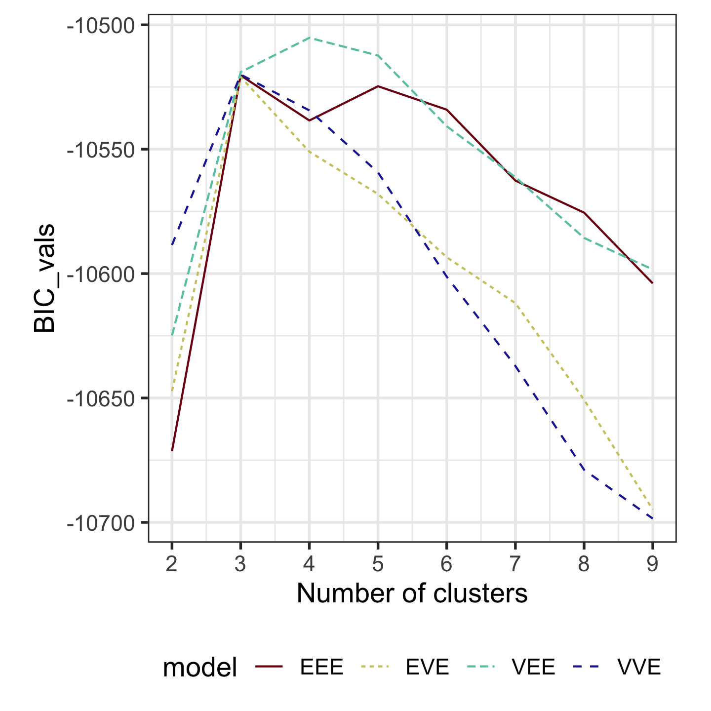
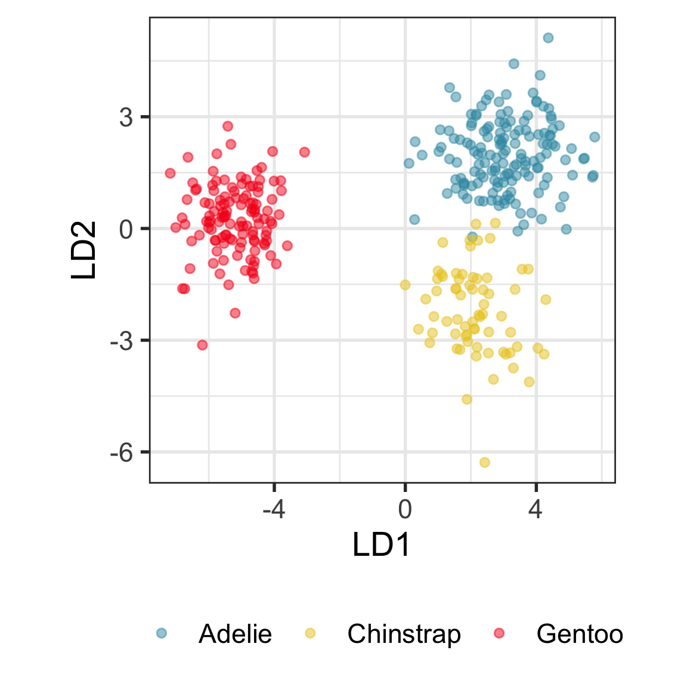
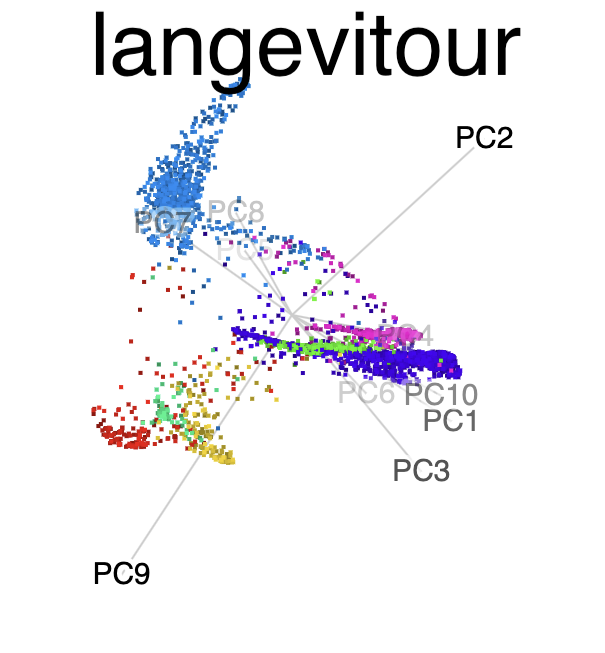
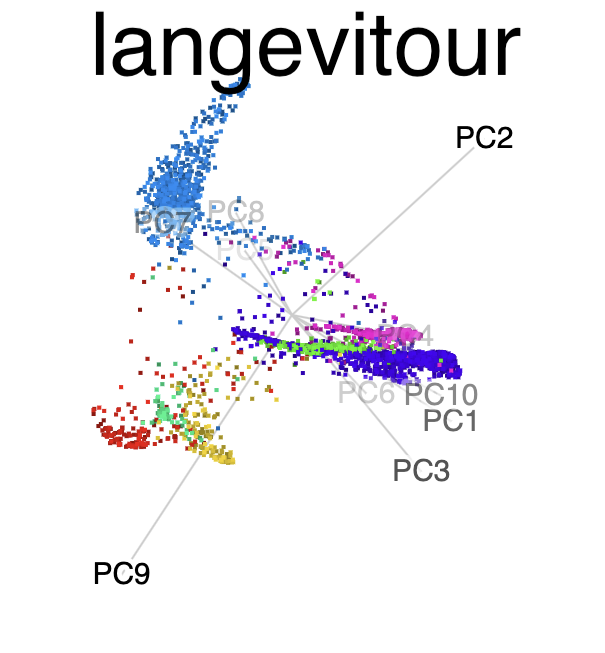

| time | topic |
|---|---|
| 3:00-3:15 | More on dimension reduction |
| 3:15-4:00 | Understanding clusters in data using visualisation |
| 4:00-4:40 | Building better classification models with visual input |
| 4:40-5:00 | Bring your own data! |
Visualising High-dimensional Data with R
Session 2
Non-linear dimension reduction (2/2)

Tour animation of the same data

What are clusters?
Ideal thinking of neatly separated clusters, but it is rarely encountered in data

Objective is to organize the cases into groups that are similar in some way. You need a measure of similarity (or distance).
Model-based clustering (2/3)
Clustering this data. What do you expect?
Can we assume the shape of the clusters is elliptical?

Model-based clustering (3/3)
Four-cluster VEE

Three-cluster EEE

Models (ellipses) are overlaid on the data. Which is the best fit?
Example: Linear DA


Linear discriminant analysis is the ideal classifier for this data.
Random forests (2/2)
The votes matrix can be considered to be predictive probabilities, where the values for each observation sum to 1. With 3 classes it is a 2D triangle. For 4 or more classes it is a simplex and can be examined in a tour.

Votes matrix for bushfire model fit
Code
# Create votes matrix data
bushfires_rf_votes <- bushfires_rf$votes %>%
as_tibble() %>%
mutate(cause = bushfires_sub$cause)
# Project 4D into 3D
proj <- t(geozoo::f_helmert(4)[-1,])
b_rf_v_p <- as.matrix(bushfires_rf_votes[,1:4]) %*% proj
colnames(b_rf_v_p) <- c("x1", "x2", "x3")
b_rf_v_p <- b_rf_v_p %>%
as.data.frame() %>%
mutate(cause = bushfires_sub$cause)
# Add simplex
simp <- simplex(p=3)
sp <- data.frame(simp$points)
colnames(sp) <- c("x1", "x2", "x3")
sp$cause = ""
b_rf_v_p_s <- bind_rows(sp, b_rf_v_p) %>%
mutate(cause = factor(cause))
labels <- c("accident" , "arson",
"burning_off", "lightning",
rep("", nrow(b_rf_v_p)))
animate_xy(b_rf_v_p_s[,1:3], col = b_rf_v_p_s$cause,
axes = "off", half_range = 1.3,
edges = as.matrix(simp$edges),
obs_labels = labels)
Other compelling pursuits
Explore and compare the boundaries of different models using the slice tour.

Dissect and explore the operation of a neural network.

Where to learn more
All of the material presented today comes from
Cook and Laa (2024) Interactively exploring high-dimensional data and models in R
Software:

 \(~~\)
\(~~\)  \(~~\)
\(~~\)  \(~~\)
\(~~\)  \(~~\) 
\(~~\) 
End of session 2

This work is licensed under a Creative Commons Attribution-ShareAlike 4.0 International License.